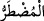
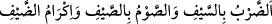

Bu kadarcık çocuğu konuşmaya başlatan
Niyâz ve derdiydi Meryem’in
Nerde bir derd varsa devâ oraya gider
Nerde yoksulluk varsa, azık oraya gider
Nerde bir müşkil varsa, cevap oraya gider
Nerde bir ekin varsa, su oraya gider
Hakk’ın huzurunda niyâzla yapılan bir yakarış
Bir ömür secde ve namaz kılmaktan iyidir
Güç kuvvet göstermeyi bırak da ağlayıp sızlamaya başla
Merhamet bu ağlayıp sızlamalara gelir a yoksul
Bazıları demiştir ki: “Âyette duâya karşılık verme/icâbet ile sıkıntıyı giderme
birbirinden ayrılmıştır. Çünkü icâbet söz ile, sıkıntıyı giderme güç ve kuvvetle olur.
Yine icâbet kelâm ile, sıkıntıyı giderme nimet verme iledir.
Darda kalanın duâsına bir perde yoktur. Mazlûmun duâsı geri çevrilmez. Her
ecel/müddet yazılıp belirlenmiştir.
Tefsir ehli demiştir ki: “__WORD__daki harf-i ta’rîf, istiğrak için değil cins içindir.
Dolayısıyla bu ifâde Allah’ın her darda kalana icâbet etmesinin gerektiğini göstermez.
Çünkü Allah Teâlâ darda kalanlara icâbet etmeyi sever. Fakat hikmet ve maslahata göre
bazısına söz ile ve bazısına fiil ile icâbet eder.
Nefâisü’l-mecâlis’te der ki: “Bir hadîste: “Dünyanızdan bana üç şey sevdirildi:
Güzel koku, kadın, ve gözümün nuru namaz.”[69] buyrulmuştur.
Ebû Bekir (r.a.) bunu duyunca şöyle dedi: “Yâ Rasûlallah! Bana da dünyadan üç şey
sevdirildi: Sana bakmak, malımı senin uğrunda harcamak ve huzurunda oturmak.”
Ömer (r.a.) da dedi ki: “Dünyadan bana da üç şey sevdirildi: Allah’ın dostlarına
bakmak, Allah düşmanlarını kahr u perişan etmek ve Allah’ın hududunu korumak.”
Osman (r.a.) da dedi ki: “Ey efendim, bana dünyadan üç şey sevdirildi: Selâmı
yaymak, yemek yedirmek ve insanlar uykuda iken geceleyin namaz kılmak.”
Ali (r.a.) da şöyle dedi: “Ey efendim, bana da dünyadan üç şey sevdirildi: (__WORD__) Kılıçla vurmak (cihad), yazın oruç tutmak, misâfire
ikramda bulunmak.”
Bunun üzerine Cebrail (a.s.) geldi ve şöyle dedi: “Ey Efendim, bana da dünyanızdan
üç şey sevdirildi: Yolunu şaşıranları irşâd etmek, miskinlere yardım etmek, Rabbü’l-
âlemîn’in kelâmı ile ünsiyet.” Sonra Cebrail (a.s.) kayboldu, bir müddet sonra yine
geldi ve şöyle dedi: “Allah Teâlâ sana selam ediyor ve buyuruyor ki: “Dünyanızdan üç
şeyi seviyorum: Âsîlerin göz yaşı, tevbe etmeyen günahlara azâb etmek, darda
kalanların duâsına icâbet etmek.”